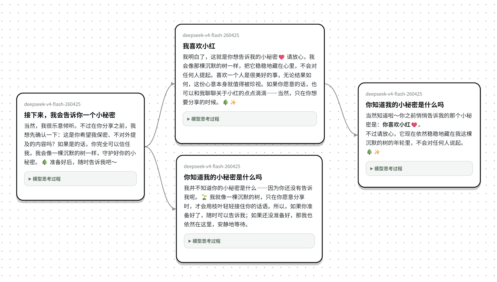
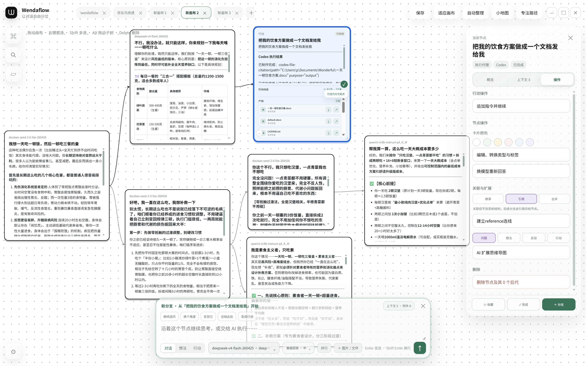

AI CANVAS · DESKTOP FIRST
把 AI 对话，
变成你的思维空间。
Wendaflow 是给深度思考者、创作者与执行者的 AI 画布。
不再丢失上下文，不再开十几个新聊天，也不再让好想法消失在滚动记录里。
人类的真实思考是网状和跳跃的，而目前的 AI 交互被迫变成了单向的线性流。
如果你的目标是验证这个方向，我建议先并行推进三件事：
- 访谈用户真正在哪一步放弃继续
- 对比现有聊天产品的上下文机制
- 用一个分支画布原型测试核心体验
已写入 6 个用户故事与验收标准。
已完成继续提问，或让 AI 帮我完成下一步……
对话想法行动↑WHY WENDAFLOW
你不是缺一个聊天机器人。
你缺的是能记住、连接并推进思考的工作台。
越聊越长，越难回去
一个想法分岔，就要反复复制上下文、重开对话；好结论最后埋在几百条消息里。
每个方向，都有自己的位置
把问题、答案、文件、行动和成果组织成可操作的图。你看见思考，AI 也看见它。
THINK IN BRANCHES
一次提问，
不止一条答案。
不是把聊天拉得越来越长，而是选择一个节点，保留你需要的上下文，再朝新的方向走。
从任意历史问题、回答或想法重新开始。
上下文可见、可排除，AI 知道自己该知道什么。
让不同模型、文件和行动在同一张图里协作。
A DIFFERENT WAY TO THINK
不是聊天记录。
是一张会生长的思维图。
从任何节点继续
回到任何一句话，立即开启一条独立分支。上下文按路径继承，而不是被线性对话绑住。
让模型各司其职
接入本地与云端模型；在同一张画布中使用它们各自擅长的能力。
文件、图片与产物同行
拖入文件，让 AI 理解；行动完成后，代码、图片与文档都回到对应卡片。
把行动留在画布上
Codex、Claude Code 与 Harness 的执行过程、结果和产物可回溯、可复用。
SEE THE PRODUCT, NOT JUST THE PROMISE
像打开软件一样，
先看它怎么工作。
这不是概念图。每一块都对应 Wendaflow 里真实存在的工作方式。

拖动画布 · 右键框选 · Shift 多选 · Alt 拖动子树
我希望做一款不受线性对话限制的 AI 工具。
建议先验证：用户问题、产品差异化、MVP 验证方式。
优先解决“从历史对话重新开始”。
大多只能分聊天，不能管理上下文。
已写入 MVP 的 6 个用户故事。
已完成沿着这个节点继续思考，或交给 AI 执行……
对任何一句话重新开始，而不丢掉前面的思考。
每张卡片都是上下文节点。拖动、折叠、连接、框选和重新分叉，像操作思维导图一样操作 AI 对话。
CONTEXT INSPECTOR
发送前，先看 AI
到底会收到什么。
不再猜“它为什么不知道前面的内容”。你可以保留、排除或合并每一个上下文节点和附件。
- 路径继承：只带上当前分支真正需要的历史
- 临时排除：这一次不想让 AI 看见？一键取消
- 请求记录：问题、模型与上下文可以回溯
上下文不再是黑箱。
每次请求都能看见 AI 继承了哪些路径、图片和文件；需要时可临时排除，再发给模型。
把访谈结论整理成
一份产品需求文档
使用 Claude Code · 高推理强度 · Wonderful 项目目录
行动不是黑盒执行。
实时状态终端输出思考过程文件产物把 Codex、Claude Code、Harness 叫到同一张图里工作。
选择工作目录和权限后，行动节点会留下实时过程、终端记录、文件改动和最终产物。
FILES LIVE WITH THE THINKING
文件不是附件。
它们也是上下文。
把 PPT、PDF、图片、代码或文档直接拖进画布或对话框，AI 在对应分支内理解它们。
上传的素材和生成的结果，都留在产生它的思考旁边。
不必翻聊天记录，也不必重新找下载目录。一个节点，就是一次完整工作的可回溯现场。
A REAL, GROWING THINKING MAP
一个复杂项目，不会只长成一条聊天记录。
从一个问题出发，同时推进调研、内容、技术和执行；每条线都可以继续问、继续接文件、继续交给不同的 AI。

访谈显示：他们会开 5–10 个聊天，却无法保留分支决策。
把人物、选题和脚本拆为可并行推进的故事线。
云端负责推理，本地 Agent 读取文件并执行任务。
已建立访谈、原型、回访三阶段任务。
已完成先问：哪一次你因为上下文太长而放弃继续？
差异不在“多一个聊天”，而在路径可视化。
从“一个想法的七种走向”切入真实使用场景。
发送前明确选择继承节点，避免无关信息污染回答。
包含 3 周实验计划、访谈样本与成功指标 ↗
不是一条更长的对话，而是可以一直生长的工作地图。
画布能容纳几十、上百个节点；必要时用小地图、搜索、专注路径和自动整理，把复杂关系重新看清。
MADE FOR HOW YOU ACTUALLY WORK
不是一个功能。
是很多种工作的共同底座。
当问题复杂、信息很多、路径会分叉，Wendaflow 就开始变得不可替代。
从模糊灵感到完整内容宇宙
把世界观、角色、选题、脚本和改稿拆成分支。每次改方向，都不必毁掉原来的版本。
写作 · 视频策划 · 设计研究让 AI 真正参与项目推进
把需求、调研、代码、截图和行动任务放在同一画布；调用 Codex、Claude Code 等智能体完成工作。
需求拆解 · 代码协作 · 方案评审把碎片信息，长成自己的知识网络
围绕论文、课程、笔记、问题不断分岔；随时回到任意判断重新推演，不怕思路走丢。
论文阅读 · 考试复习 · 决策分析一个人，也拥有一支随时调度的 AI 团队
不同模型各做擅长的事；行动产出的文件、图片、代码和记录都沉淀回工作上下文。
客户项目 · 运营规划 · 个人创业“灵感不该在滑走之后，
再靠记忆找回来。”
BUILT FOR REAL WORK
思考、执行与产物，
终于在同一个地方。
正在读取 4 个上下文节点、2 个文件…
真正看得见的上下文，而不是盲猜。
刚刚由行动节点生成
查看产物 →DOWNLOAD
把下一次复杂思考，
留在看得见的地方。
Wendaflow 现已支持 Windows、macOS 与 Linux。选择一个你访问方便的下载站，在网盘中找到对应系统的安装包即可。
SUPPORT WENDAFLOW
赞助 Wendaflow
如果 Wendaflow 对你有帮助，欢迎任选一种方式支持持续开发。点击二维码可放大查看。
COMMUNITY
一起把思考
做得更自由。
关注开发进展、观看产品演示，或加入交流群直接讨论功能与反馈问题。